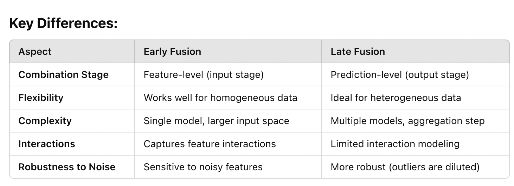

A Tour of Machine Learning Architectures
Posted on Mon 06 January 2025 in misc
Early Fusion Example (Feature-Level Fusion)
Scenario
You want to predict a user's sentiment based on textual data and a corresponding image(e.g., a post on social media).
Steps
- Extract features from both modalities
- Use a Text Encoder (e.g., a pre-trained BERT model) to generate embeddings for the text.
- Use an Image Encoder (e.g., ResNet or a CNN) to extract features from the image.
- Concatenate the feature vectors (early fusion)
Combined_Features = Concatenate([Text_Features, Image_Features]) - Feed the combined features into a single machine learning model (e.g., a fully connected neural network).
- Train the model to predict sentiment based on the unified representation.
Example Code (Pseudocode)
# Extract text and image features
text_features = bert_model(text_input)
image_features = resnet_model(image_input)
# Early fusion Combine features
combined_features = concatenate([text_features, image_features])
# Feed into a unified model
prediction = dense_layer(combined_features)
Advantages
- Captures interactions between text and image data.
- Single model simplifies deployment.
Limitations
- Requires careful handling of different feature scales.
- Can lead to very large input sizes.
Late Fusion Example (Decision-Level Fusion)
Scenario
You want to classify news articles using text data and reader engagement metrics (e.g., clicks, likes).
Steps
- Train separate models for each modality
- A Text Classification Model (e.g., using a transformer) to classify the text.
- A Tabular Data Model (e.g., XGBoost) to predict based on engagement metrics.
- Generate predictions (e.g., probabilities) from each model
Text_Model_Prediction = [0.7, 0.2, 0.1] # Probabilities for 3 classes Tabular_Model_Prediction = [0.6, 0.3, 0.1] - Combine predictions using a late fusion technique
- Weighted average
Final_Prediction = 0.6 * Text_Model_Prediction + 0.4 * Tabular_Model_Prediction -
Voting or ensemble techniques.
-
Use the combined prediction for the final decision.
Example Code (Pseudocode)
# Generate predictions from individual models
text_pred = text_model.predict(text_input)
tabular_pred = tabular_model.predict(tabular_input)
# Late fusion Combine predictions (weighted average)
final_pred = 0.6 * text_pred + 0.4 * tabular_pred
Advantages
- Each model specializes in its own data modality.
- More robust to noisy data in one source.
Limitations
- Does not capture direct interactions between text and engagement features.
- Coordination between models can increase complexity.
When to Choose Early vs. Late Fusion
Early Fusion
- If feature interactions are important, such as combining complementary information from different modalities (e.g., text and image for sentiment).
- When the data sources have similar structures, enabling feature-level merging.
Late Fusion
- If data sources are heterogeneous or require specialized models (e.g., image vs. tabular data).
- When leveraging ensemble techniques to combine strengths of different models.
- To add modularity for easier updates (e.g., replacing one model without retraining the entire system).

Hybrid Fusion
You can also mix both techniques - Combine some features early (e.g., combine image and audio features for a video analysis model). - Use late fusion to merge the prediction with another modality (e.g., textual analysis of video captions).
Multi-Label Classifier with Early Fusion
A multi-label classifier predicts multiple labels simultaneously (e.g., tagging an image with multiple attributes like "cat," "outdoor," "sunny"). Combining data from multiple sources (e.g., images and text) with early fusion involves merging features at the input level. Here's a step-by-step guide.
- Data Collection Ensure you have multiple data sources for each instance, such as: Images: Visual content of the instance. Text: Descriptions, captions, or metadata. Tabular Data (optional): Associated numerical or categorical features.
- Preprocessing Image Data: Normalize pixel values (e.g., scale to [0, 1]). Use an image encoder (e.g., ResNet, EfficientNet) to extract feature vectors. Text Data: Tokenize and process text (e.g., using a pre-trained model like BERT) to generate embeddings. Tabular Data (if applicable): Normalize numerical features and encode categorical features.
- Feature Fusion (Early Fusion) Extract features from each modality and concatenate them to create a unified representation. Ensure all feature vectors have compatible dimensions (use projections if needed).
- Multi-Label Classification Model Use a fully connected neural network (dense layers) as the classifier. The output layer should have one neuron per label, with an activation function such as sigmoid (to output probabilities for each label).
- Loss Function Use Binary Cross-Entropy Loss for multi-label classification: plaintext Copy code Loss = - ∑ [y_true * log(y_pred) + (1 - y_true) * log(1 - y_pred)] This treats each label as an independent binary classification problem.
- Training Train the model using the combined feature representation as input and the multi-label target as the output.
Image Input --> Image Encoder --> Image Features Text Input --> Text Encoder --> Text Features Tabular Data (Optional) --> Tabular Features
Combined Features = Concatenate([Image Features, Text Features, Tabular Features])
Combined Features --> Dense Layers --> Output Layer (Sigmoid Activations for Multi-Label Predictions)
import tensorflow as tf
from tensorflow.keras import layers, models
from transformers import TFBertModel
# Input layers for different data sources
image_input = tf.keras.Input(shape=(224, 224, 3), name="image_input")
text_input = tf.keras.Input(shape=(512,), name="text_input") # Assume 512 tokens
tabular_input = tf.keras.Input(shape=(10,), name="tabular_input") # Example tabular data with 10 features
# Image Encoder (e.g., ResNet)
image_encoder = tf.keras.applications.ResNet50(include_top=False, pooling="avg")
image_features = image_encoder(image_input)
# Text Encoder (e.g., BERT)
bert_model = TFBertModel.from_pretrained("bert-base-uncased")
text_features = bert_model(text_input).pooler_output
# Optional Tabular Features
tabular_features = layers.Dense(64, activation="relu")(tabular_input)
# Early fusion: Combine features
combined_features = layers.concatenate([image_features, text_features, tabular_features])
# Dense layers for classification
x = layers.Dense(128, activation="relu")(combined_features)
x = layers.Dropout(0.5)(x)
output = layers.Dense(num_labels, activation="sigmoid", name="multi_label_output")(x) # Sigmoid for multi-label
# Build and compile the model
model = models.Model(inputs=[image_input, text_input, tabular_input], outputs=output)
model.compile(optimizer="adam", loss="binary_crossentropy", metrics=["accuracy"])
To create a multi-task classifier, where you handle multiple classification tasks simultaneously, you follow a similar approach to the general multi-task learning process but tailor it specifically for classification tasks.
Example Use Case
Imagine a dataset containing textual data about customer reviews. You want to: 1. Task 1: Predict the review's sentiment (multi-class classification: positive, neutral, negative). 2. Task 2: Predict the review's category (multi-class classification: electronics, books, clothing). 3. Task 3: Identify relevant tags (multi-label classification: "cheap," "durable," "trendy").
Multi-Task Classifier
1. Shared Feature Extractor
- Use a shared model (e.g., a BERT encoder or CNN) to extract features from the input data.
- This layer learns a common representation useful across all tasks.
2. Task-Specific Heads
- Add separate fully connected layers for each classification task:
- Task 1: A dense layer with softmax activation for sentiment prediction.
- Task 2: A dense layer with softmax activation for category prediction.
- Task 3: A dense layer with sigmoid activation for multi-label classification.
3. Loss Functions
- Each task uses an appropriate loss function:
- Task 1 & Task 2: Categorical Cross-Entropy.
-
Task 3: Binary Cross-Entropy.
-
Combine the losses into a weighted sum during training.
4. Training
- Provide labels for all tasks in the training loop.
- Train the model to optimize all tasks simultaneously.
Model Architecture
Input (e.g., text or image)
|
Shared Feature Extractor (e.g., BERT, ResNet, CNN)
|
+--> Task 1 Head (Sentiment Classification, Softmax)
|
+--> Task 2 Head (Category Classification, Softmax)
|
+--> Task 3 Head (Tag Classification, Sigmoid)
Example Code (TensorFlow/Keras)
import tensorflow as tf
from tensorflow.keras import layers, models
from transformers import TFBertModel
# Input Layer
input_layer = tf.keras.Input(shape=(512,), name="text_input") # Example for text input (BERT token IDs)
# Shared Feature Extractor (e.g., BERT)
bert_model = TFBertModel.from_pretrained("bert-base-uncased")
shared_features = bert_model(input_layer).pooler_output # Extract shared features
# Task 1: Sentiment Classification (Multi-class)
task1_output = layers.Dense(3, activation="softmax", name="task1_output")(shared_features)
# Task 2: Category Classification (Multi-class)
task2_output = layers.Dense(5, activation="softmax", name="task2_output")(shared_features)
# Task 3: Tag Classification (Multi-label)
task3_output = layers.Dense(10, activation="sigmoid", name="task3_output")(shared_features)
# Create the Multi-Task Model
model = models.Model(inputs=input_layer, outputs=[task1_output, task2_output, task3_output])
# Compile the Model with Task-Specific Losses
model.compile(
optimizer="adam",
loss={
"task1_output": "categorical_crossentropy",
"task2_output": "categorical_crossentropy",
"task3_output": "binary_crossentropy",
},
metrics={
"task1_output": "accuracy",
"task2_output": "accuracy",
"task3_output": "binary_accuracy",
}
)
# Display the Model Summary
model.summary()
Training the Model
Prepare the data: - For Task 1 & Task 2, labels should be one-hot encoded vectors. - For Task 3, labels should be binary vectors indicating the presence/absence of each tag.
Train the model:
history = model.fit(
x=text_data, # Input data (e.g., tokenized text for BERT)
y={
"task1_output": sentiment_labels, # Labels for Task 1
"task2_output": category_labels, # Labels for Task 2
"task3_output": tag_labels, # Labels for Task 3
},
batch_size=32,
epochs=20,
validation_split=0.2
)
Key Points to Consider
- Loss Weighting: Adjust the weights for each task's loss if one task is more important or has different scales:
model.compile(
optimizer="adam",
loss={
"task1_output": "categorical_crossentropy",
"task2_output": "categorical_crossentropy",
"task3_output": "binary_crossentropy",
},
loss_weights={
"task1_output": 1.0,
"task2_output": 0.5,
"task3_output": 0.8,
},
metrics={
"task1_output": "accuracy",
"task2_output": "accuracy",
"task3_output": "binary_accuracy",
}
)
-
Evaluation: Use task-specific evaluation metrics (e.g., precision, recall, F1-score for multi-label tasks).
-
Shared Representation: The shared feature extractor should be powerful enough to learn representations useful for all tasks. If tasks are too different, consider partially shared layers or a hybrid approach.
-
Transfer Learning: You can initialize the shared extractor with pre-trained models (e.g., BERT for text, ResNet for images) to improve performance.